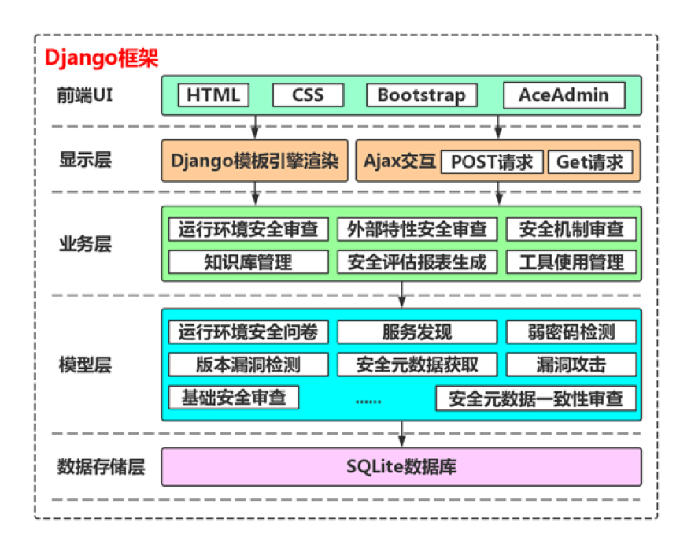
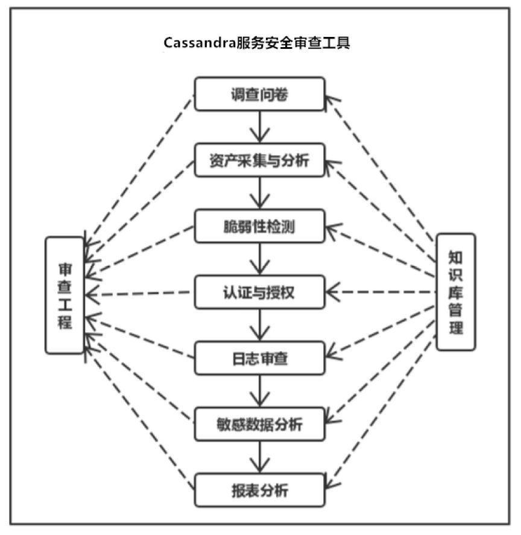

伴随着云计算、大数据、物联网、人工智能等信息技术的快速发展和传统产业数字化的转型，网络环境下的各种数据源每年都在以空前的速度产生大量的数据[1]。据国际数据公司预测，全球数据总量预计2020年达到44ZB，我国数据量将达到8060EB，占全球数据总量的18%。其中，Cassandra作为一套开源分布式NoSQL数据库系统，由于自身良好的可扩展性，被Digg、Twitter等知名Web 2.0网站所采纳，并且Facebook、eBay、Reddit、NetFlix、IBM等多家公司也都在使用Cassandra，因此Apache Cassandra成为了当今一种流行的分布式结构化数据存储方案。
我国网络安全法规对大数据安全审查提出了迫切要求，但是目前缺少有效的Cassandra安全审查方法与可用的Cassandra自动化安全审查工具。如何对运行在开放复杂环境中的Cassandra服务构建一个有效的安全审查方法，并实现相对应的自动化安全审查工具，是亟待解决的难题。针对这一问题，本课题选择Cassandra服务作为目标对象，深入研究Cassandra安全审查的方法，并且探索自动化安全审查技术，最终基于Hadoop生态系统，根据安全审查方法与审查技术开发出了一套可用的Cassandra服务自动化审查支持工具。


1) 知识库管理
知识库是安全审查工具完成各项审查任务的重要依据，存储了审查过程所需的方法、规则和知识等，是审查准备阶段最重要的工作内容。知识库管理功能，一方面可以帮助审查人员科学有效地整理准备知识库，另一方面可以满足对知识库的个性化定制，以完成多种多样的审查任务。
2) 审查工程
借鉴工程管理的思路，引入审查工程的概念来对一次审查过程进行科学合理的组织与记录。审查工程对一次审查工作进行了抽象，这样一来安全审查工具就可以同时支持多个审查工作的开展，还可以对历史审查结果进行存档维护，提高了工具的实用性，也为审查工作的开展提供了很大便利。
3) 调查问卷
调查问卷是人工审查的重要方式，不能用自动化方式实现的审查内容，都需要通过审查人员设计相应的调查问卷，再由被审查集群的Cassandra集群管理人员完成调查问卷的填写来完成。
4) 资产采集与分析
Cassandra服务的资产情况是安全审查的重要内容，资产采集与分析功能充分利用了大数据服务自动化信息采集技术采集服务资产信息，提供了批量获取的方式，也为审查人员提供了用户友好的可交互方式，方便审查人员对Cassandra集群的资产情况进行审查。
5) 脆弱性检测
集群的安全机制也是安全审查工具的审查内容之一，脆弱性检测则通过对大数据服务安全威胁的检测来对集群的安全机制进行验证。
6) 认证与授权
大数据服务资源众多，科学合理的认证与授权方式是大数据平台管理硬件、软件和数据资源的关键，因此对大数据服务的认证与授权机制进行审查非常必要，认证与授权也是保证大数据服务安全的重要信息。
7) 日志审查
运行日志是大数据服务运行状态的持久化数据，也是排查大数据服务问题的重要依据，所以运行日志是Cassandra集群安全审查的重要数据支撑。
8) 敏感数据分析
Cassandra大数据服务可以对海量数据进行存储和计算，海量数据大都是用户数据积累得到的，必然含有敏感数据，比如：姓名、手机号和身份证号等。敏感数据涉及用户隐私，所以大数据服务对个人信息的保护重点体现在敏感数据的保护。发现集群中存储的敏感数据，是敏感数据分析的主要任务。
9) 报表分析
报表分析功能是整个审查过程的总结，主要包括统计分析和报表生成两个部分，生成的审查结果报告支持在线预览和打印输出。